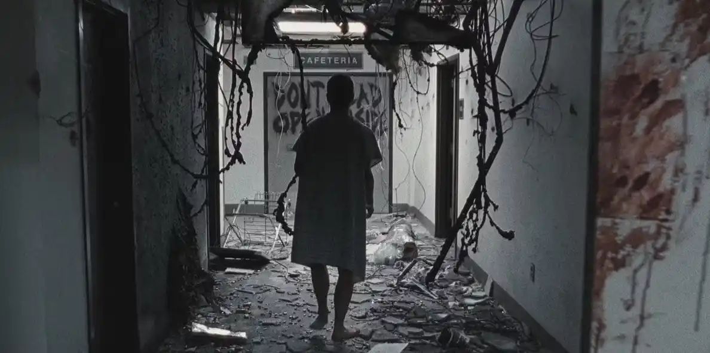

Season 1
When sheriff's deputy Rick Grimes of King County, Georgia, wakes from a coma, he discovers the world has been overrun by zombies ("walkers"). Rick befriends Morgan Jones and travels alone to Atlanta before finding his wife Lori, son Carl, and his police partner and best friend Shane Walsh in the woods with other survivors. After being attacked by walkers at night, the whole group travels back to Atlanta to the Centers for Disease Control (CDC) building, but find from the sole remaining scientist that no cure yet exists for the pandemic.

Behind-the-Scenes Facts About The Walking Dead Season 1
The Origins of the Show
The idea for The Walking Dead series originated from Robert Kirkman’s popular comic book of the same name, first published in 2003. When AMC picked up the project, Frank Darabont, the director of The Shawshank Redemption and The Green Mile, was brought on as the showrunner. His vision was instrumental in shaping the gritty, emotional tone of the series.
The Walker School
To make the zombies (referred to as "walkers") look and move realistically, the show hired professional extras and put them through "walker school." Greg Nicotero, the show’s special effects guru, trained the extras to move in a slow, eerie, and decayed manner. This commitment to detail added authenticity to the undead hordes.
Limited Budget
Despite being one of AMC’s biggest shows, Season 1 had a modest budget of approximately $3.4 million per episode. To make the most of it, the production team relied heavily on practical effects, creative camera angles, and clever use of Atlanta's urban landscapes.
Filming in Atlanta’s Heat
The first season was filmed during the sweltering summer of 2010 in Atlanta, Georgia. The heat posed challenges for both the actors and the crew, especially during outdoor scenes. Cast members often commented on how the heat made the apocalypse setting feel even more real.
Practical and Digital Effects
The walkers’ grotesque appearances were brought to life using a combination of makeup and CGI. The special effects team worked tirelessly to design realistic wounds, decaying skin, and missing limbs. Digital effects were used sparingly, mostly to enhance the gore or remove elements that couldn’t be done practically.
Casting Rick Grimes
Andrew Lincoln, who played Rick Grimes, was not initially well-known in the United States. His audition impressed Frank Darabont, who praised his ability to bring raw emotion to the character. Lincoln’s Southern accent and dedication to the role won over fans almost instantly.
Short Season, Big Impact
Unlike later seasons, the first season consisted of only six episodes. This short run allowed the writers to focus on developing the characters and the apocalyptic world without rushing the story. The tight pacing and dramatic stakes helped hook viewers and set the stage for the show’s long-term success.
The Tank Scene
One of the most iconic moments from Season 1 is Rick’s escape from a horde of walkers by crawling into an abandoned tank. Filming this scene required meticulous planning, including building a tank interior set to capture close-ups. The dramatic sequence remains one of the most memorable from the series.
Walker Sounds
The terrifying groans and growls of the walkers were not just improvised by the actors. The sound design team recorded and layered various animal noises and human voices to create the signature walker sounds that have become synonymous with the show.
Kirkman’s Cameo Idea
Robert Kirkman originally wanted to appear as a walker in Season 1, but the filming schedule didn’t allow it. He would later make cameo appearances in future seasons as part of the undead horde.
Inspiration for the Opening Credits
The eerie, decayed look of the opening credits was inspired by the idea of a world abandoned by humanity. The credits feature haunting visuals of desolate streets, broken signs, and decaying objects, setting the tone for the story before the first scene even begins.
A Short Timeline
Season 1 spans only a few days in the Walking Dead universe. This tight timeline helps highlight the chaos and confusion of the initial outbreak, emphasizing how quickly society fell apart.
Unfinished Stories
Some storylines hinted at in Season 1, like the origins of the virus, were intentionally left ambiguous to keep the focus on the characters' survival and emotional journeys. This decision frustrated some fans but ultimately became a hallmark of the series.

Season 2
Rick's group, searching for Carol's missing daughter, Sophia, takes shelter at a farm run by Hershel Greene. Tensions with Hershel's family worsen after it is discovered that he has a barn full of walkers: former friends and family members.
Rick learns that Shane and Lori were romantically involved while he was in a coma, and that Lori is pregnant. Shane and Rick's friendship deteriorates, until Rick is forced to kill Shane in self-defense.
The commotion attracts walkers to the farm, forcing Rick's group and Hershel's family to evacuate.
Rick learns that Shane and Lori were romantically involved while he was in a coma, and that Lori is pregnant. Shane and Rick's friendship deteriorates, until Rick is forced to kill Shane in self-defense.
The commotion attracts walkers to the farm, forcing Rick's group and Hershel's family to evacuate.
Season 3
Eight months after fleeing the farm, Rick's group—sans Andrea—finds a remote prison, which they make their new home after clearing it of walkers.
Lori dies from an emergency C section, and Rick starts to become unhinged and hallucinate. Andrea was rescued by Michonne and the two discover Woodbury, a fortified town led by a deceitful man known as "the Governor" who seeks to destroy the group at the prison.
Conflict erupts between the two groups leading to the fall of Woodbury, but the Governor kills Andrea and escapes. The remaining citizens of Woodbury move into the prison.
Lori dies from an emergency C section, and Rick starts to become unhinged and hallucinate. Andrea was rescued by Michonne and the two discover Woodbury, a fortified town led by a deceitful man known as "the Governor" who seeks to destroy the group at the prison.
Conflict erupts between the two groups leading to the fall of Woodbury, but the Governor kills Andrea and escapes. The remaining citizens of Woodbury move into the prison.

Season 4
Several months after the Governor's attack, a deadly flu kills many of the people at the prison.
The Governor finds Martinez, his former right-hand man and kills him, taking over his group before leading them into the prison. Rick's group is forced to separate and flee, while Hershel and the Governor are killed.
The scattered survivors try to find each other and make new acquaintances. They all find numerous signs pointing to a safe haven called Terminus.
Group by group, they reunite at Terminus, but Rick's group, sans Carol, is captured for an unknown purpose.
The Governor finds Martinez, his former right-hand man and kills him, taking over his group before leading them into the prison. Rick's group is forced to separate and flee, while Hershel and the Governor are killed.
The scattered survivors try to find each other and make new acquaintances. They all find numerous signs pointing to a safe haven called Terminus.
Group by group, they reunite at Terminus, but Rick's group, sans Carol, is captured for an unknown purpose.
Season 5
The residents of Terminus have become cannibals. Carol leads a charge that frees Rick's group. Some of the group are captured by a group of corrupt cops based out of Grady Memorial Hospital.
After the group migrates to Virginia, a stranger named Aaron approaches, inviting them to join the fortified community of Alexandria, led by Deanna Monroe. They quickly realize the residents are ill-prepared to do what it takes to survive.
Rick becomes attracted to Jessie Anderson and discovers she has an abusive husband. Deanna orders Rick to execute the man after he kills her husband as Morgan arrives unexpectedly.
After the group migrates to Virginia, a stranger named Aaron approaches, inviting them to join the fortified community of Alexandria, led by Deanna Monroe. They quickly realize the residents are ill-prepared to do what it takes to survive.
Rick becomes attracted to Jessie Anderson and discovers she has an abusive husband. Deanna orders Rick to execute the man after he kills her husband as Morgan arrives unexpectedly.

Season 6
Deanna gives Rick command of Alexandria to protect the town.
A group known as the Wolves use a zombie horde to attack Alexandria, and Deanna and the entire Anderson family (among others) are killed.
While recovering, Alexandria learns of a community called the Hilltop. Paul "Jesus" Rovia invites them to trade supplies with Hilltop if they can help end the threat of the extortionist Saviors led by a man named Negan.
Although Rick's group decimate one Savior outpost, they are later caught by Negan and forced to submit to him.
A group known as the Wolves use a zombie horde to attack Alexandria, and Deanna and the entire Anderson family (among others) are killed.
While recovering, Alexandria learns of a community called the Hilltop. Paul "Jesus" Rovia invites them to trade supplies with Hilltop if they can help end the threat of the extortionist Saviors led by a man named Negan.
Although Rick's group decimate one Savior outpost, they are later caught by Negan and forced to submit to him.
Season 7
Negan brutally murders Abraham and Glenn, initiating his rule over Alexandria. His actions initially lead Rick to submit, but Michonne persuades him to fight back.
They encounter a community called the Scavengers and ask them for help. Carol and Morgan befriend King Ezekiel, the leader of the Kingdom, while Maggie and Sasha rally the Hilltop.
Rosita and Eugene make a bullet to kill Negan. When the bullet is blocked by Lucille, Negan's baseball bat, Negan forcefully recruits Eugene as a Savior.
The Saviors and turncoat Scavengers attack Alexandria but are repelled by Sasha's sacrifice and the aid of Kingdom and Hilltop soldiers.
They encounter a community called the Scavengers and ask them for help. Carol and Morgan befriend King Ezekiel, the leader of the Kingdom, while Maggie and Sasha rally the Hilltop.
Rosita and Eugene make a bullet to kill Negan. When the bullet is blocked by Lucille, Negan's baseball bat, Negan forcefully recruits Eugene as a Savior.
The Saviors and turncoat Scavengers attack Alexandria but are repelled by Sasha's sacrifice and the aid of Kingdom and Hilltop soldiers.


Season 8
Rick, Maggie, and Ezekiel rally their communities into war against Negan and the Saviors.
Losses are heavy on both sides and many of the Kingdom's soldiers are killed. Alexandria falls to a Savior attack, and Carl is bitten by a walker. Before euthanizing himself, Carl convinces Rick to end the war peacefully and restart society anew.
Negan attempts to wipe out Rick and his allies in a final battle, but Eugene thwarts his plan by sabotaging the Saviors' bullets.
Rick wounds Negan, but against Maggie's wishes, spares and imprisons Negan, ending the war.
Losses are heavy on both sides and many of the Kingdom's soldiers are killed. Alexandria falls to a Savior attack, and Carl is bitten by a walker. Before euthanizing himself, Carl convinces Rick to end the war peacefully and restart society anew.
Negan attempts to wipe out Rick and his allies in a final battle, but Eugene thwarts his plan by sabotaging the Saviors' bullets.
Rick wounds Negan, but against Maggie's wishes, spares and imprisons Negan, ending the war.
Season 9
Eighteen months after Negan's downfall, Rick proposes building a bridge to ease trading, but this leads to more resentment.
Rick is seemingly killed when he destroys the bridge to prevent an invasion of walkers.
Six years later, his absence has caused estrangement between the communities, and a new walker-controlling threat called the Whisperers demand the survivors do not trespass in their territory.
Their leader, Alpha, has acquired a large horde of walkers that she will unleash if they do so. After her daughter Lydia abandons her mother's group for the Kingdom's, Alpha disowns her and massacres many residents during a fair.
Rick is seemingly killed when he destroys the bridge to prevent an invasion of walkers.
Six years later, his absence has caused estrangement between the communities, and a new walker-controlling threat called the Whisperers demand the survivors do not trespass in their territory.
Their leader, Alpha, has acquired a large horde of walkers that she will unleash if they do so. After her daughter Lydia abandons her mother's group for the Kingdom's, Alpha disowns her and massacres many residents during a fair.
Season 10
Alpha begins breaking down the communities with seemingly random walker attacks and acts of sabotage.
Under Carol's orders, Negan infiltrates the Whisperers and assassinates Alpha. Her right-hand man Beta takes command of the Whisperers, but he and the horde are defeated by the survivors.
Eugene leads a group to West Virginia to meet a new group of survivors.
Meanwhile, Michonne travels north to search for Rick after finding evidence he survived his apparent death.
Under Carol's orders, Negan infiltrates the Whisperers and assassinates Alpha. Her right-hand man Beta takes command of the Whisperers, but he and the horde are defeated by the survivors.
Eugene leads a group to West Virginia to meet a new group of survivors.
Meanwhile, Michonne travels north to search for Rick after finding evidence he survived his apparent death.
Season 11
Eugene's group convinces the Commonwealth, a large, prosperous community with a strict class system, to lend aid and refuge to the Coalition.
However, autocratic governor Pamela Milton becomes hostile toward the Coalition after her corruption is exposed and her son Sebastian is killed.
The Coalition leads a revolution against Pamela when she tries to sacrifice the lower classes to a horde containing more intelligent walker variants; in the aftermath, Rosita dies of a bite, Negan is accepted by Maggie as an ally, and Ezekiel takes over as governor.
After the Coalition is rebuilt, Daryl leaves to find others.
However, autocratic governor Pamela Milton becomes hostile toward the Coalition after her corruption is exposed and her son Sebastian is killed.
The Coalition leads a revolution against Pamela when she tries to sacrifice the lower classes to a horde containing more intelligent walker variants; in the aftermath, Rosita dies of a bite, Negan is accepted by Maggie as an ally, and Ezekiel takes over as governor.
After the Coalition is rebuilt, Daryl leaves to find others.